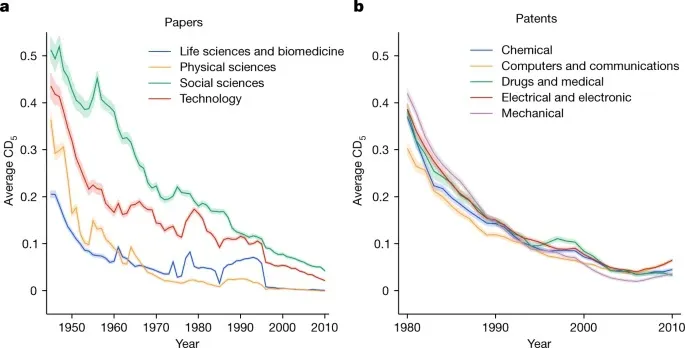
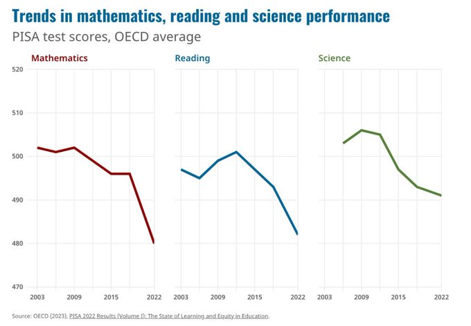

7 Science
Reductionism has become a disease, a viewpoint lacking both intellectual sophistication and emotional depth - blighting our ability to understand what is happening and what to do about it. There are four main pathways to the truth: science, reason, intuition and imagination. Any world wiew that tries to get by without paying due respect to all four is bound to fail (Iain McGilChrist)
A paradigm is an internally coherent system of thought that results in useful insights but also finds it difficult to escape its own assumptions.
7.1 Reticence and Gradualism
Hansen
Scientific reticence, in part, may be a consequence of the scientific method, which is fueled by objective skepticism. Another factor that contributes to irrational reticence among rational scientists is “delay discounting,” a preference for immediate over delayed rewards. The penalty for “crying wolf” is immediate, while the danger of being blamed for having “fiddled while Rome was burning” is distant. Also, larding of papers and research proposals with caveats and uncertainties increases chances of obtaining research support. “Gradualism” that results from reticence seems to be comfortable and well-suited for maintaining long-term support.
Reticence and gradualism reach a new level with the Intergovernmental Panel on Climate Change (IPCC). The prime example is IPCC’s history in evaluating climate sensitivity, the most basic measure of climate change, as summarized in our present paper. IPCC reports must be approved by UN-assembled governments, but that constraint should not dictate reticence and gradualism. Climate science clearly reveals the threat of being too late. “Being too late” refers not only to assessment of the climate threat, but also to technical advice on the implications of climate science for policy. Are not we as scientists complicit if we allow reticence and comfort to obfuscate our description of the climate situation and its implications? Does our training – years of graduate study and decades of experience – not make us the best-equipped to advise the public on the climate situation and its implications for policy? As professionals with the deepest understanding of planetary change and as guardians of young people and their future, do we not have an obligation, analogous to the code of ethics of medical professionals, to render to the public our full and unencumbered diagnosis and its implications? That is our aim here.
7.2 Dualism
If science is the combination of logical definitions with empirical observations, theology is science without the observation. It is a web of human definitions, and nothing more.
Although it makes for abysmal science, the theological stance is a great way to sound authoritative while you spout bullshit. The self-styled libertarian ‘philosopher’ Ayn Rand was a master of this technique. Here she is laying out her philosophy of objectivism:
The formula defining the concept of existence and the rule of all knowledge: A is A. A thing is itself. You have never grasped the meaning of [this] statement. I am here to complete it: Existence is Identity, Consciousness is Identification.
Rand’s writing is a tour-de-force in theological nonsense. Start with a tautology (A = A). Follow it up with some weighty definitions (existence = identity). Claim you have a ‘rule for all knowledge’. Marvelous bullshit.
7.3 Reductionism
Austin
The Fallacy of Reductionism is that reductionism is always the best way to investigate the world, and that more knowledge will always be gleaned from breaking phenomena into parts than contemplating them whole.
The Trap of Reductionism has been that because reductionism was so successful in explaining the dead things upon which the Scientific Revolution was founded – planets, light, falling objects etc. – we were insufficiently sceptical about its adequacy as a method to investigate more complex, living things. Yet, we proceeded anyway with the unfortunate consequence that we have delayed, and sometimes derailed, our comprehension of many living things, including ourselves.

The trap can also be envisaged as a valley. Hence, Christopher Tape, a biologist, depicts the broad history of biological enquiry as being a ‘downward’ journey of reductionism, now transitioning into an ‘upward’ journey to discoveremergent properties that cannot be gleaned from knowledge of the parts. (Note the appearance of ‘systems’ and ‘life’ on the right-hand side of the Figure)
Similar trajectories could be drawn for many other natural and social sciences, all ‘pulled down’ to a reductionist vision. The point is not that this has not yielded considerable benefit, only that it promoted a method of investigation whose cost was the postponement of our comprehension of emergent properties. As that recognition has sunk in, many disciplines have recognized they have reached the point of diminishing returns to reductionism.
Encouragingly, there is now a ‘Systemic Spring’ underway in which multiple disciplines are racing to incorporate the insights of complexity thinking into their subjects, with the natural and social sciences having the most to gain. Indeed, in general terms, the more ‘complex’ the object of a discipline’s enquiry, the more there is to gain – or, equivalently, the more that the reductionist world view has inadvertently held back.
As Brian Arthur, one of the key proponents of complexity in the field of economics, recently expressed it: ‘complexity is not a science, rather it is a movement within science.’
Werner Heisenberg, one of the key pioneers of quantum mechanics, sensed how deeply our penchant to divide had sunk and how difficult it would be to root out:
‘The Cartesian partition has penetrated deeply into the human mind during the three centuries following Descartes and it will take a long time for it to be replaced by a really different attitude toward the problem of reality.’
What is genuinely exciting about systemic science is that it introduces a rigorous way of seeing relation over part.
Gregory Bateson, one of the most prominent system thinkers of the 20th Century, who tried to lean against the reductionist tide in the social sciences when it was at its height, said:
‘The major problems in the world are the result of the difference between how nature works and the way people think.’
Austin (2021) The Matrix of the Emissary - Market Primacy and The Sustainability Crisis
7.4 Enligthenment
Intriguingly, we use the term Enlightenment for two major cognitive developments: the Western Enlightenment of the 17th Century and the Buddhist Enlightenment of 5th Century BC. They offer strikingly divergent recommendations about how to be in the world. Western Enlightenment is about using reason for human progress, crystallized in a quantitative-based scientific method. Buddhist Enlightenment intuited that human striving is the source of unhappiness and that progress has treadmill or trap-like characteristics. The Western Enlightenment, right from its Baconian outset extolled an extractive attitude towards Nature – ‘let the human race recover that right over Nature which belongs to it by divine bequest’. It is a worldview that leads one eventually to describe Nature as an ‘asset’ and as ‘natural capital’. Buddhism does not even recognize Nature as separate.
Possibly the time is ripe for some Third Enlightenment – a meta-Enlightenment?! – which might reconcile why it is that humankind already hastwo major Enlightenments on the books.
Austin (2021) The Matrix of the Emissary - Market Primacy and The Sustainability Crisis
7.5 Scale
Chu Significance
The size of scientific fields may impede the rise of new ideas. Examining 1.8 billion citations among 90 million papers across 241 subjects, we find a deluge of papers does not lead to turnover of central ideas in a field, but rather to ossification of canon. Scholars in fields where many papers are published annually face difficulty getting published, read, and cited unless their work references already widely cited articles. New papers containing potentially important contributions cannot garner field-wide attention through gradual processes of diffusion. These findings suggest fundamental progress may be stymied if quantitative growth of scientific endeavors—in number of scientists, institutes, and papers—is not balanced by structures fostering disruptive scholarship and focusing attention on novel ideas.
Chu Abstract
In many academic fields, the number of papers published each year has increased significantly over time. Policy measures aim to increase the quantity of scientists, research funding, and scientific output, which is measured by the number of papers produced. These quantitative metrics determine the career trajectories of scholars and evaluations of academic departments, institutions, and nations. Whether and how these increases in the numbers of scientists and papers translate into advances in knowledge is unclear, however. Here, we first lay out a theoretical argument for why too many papers published each year in a field can lead to stagnation rather than advance. The deluge of new papers may deprive reviewers and readers the cognitive slack required to fully recognize and understand novel ideas. Competition among many new ideas may prevent the gradual accumulation of focused attention on a promising new idea. Then, we show data supporting the predictions of this theory. When the number of papers published per year in a scientific field grows large, citations flow disproportionately to already well-cited papers; the list of most-cited papers ossifies; new papers are unlikely to ever become highly cited, and when they do, it is not through a gradual, cumulative process of attention gathering; and newly published papers become unlikely to disrupt existing work. These findings suggest that the progress of large scientific fields may be slowed, trapped in existing canon. Policy measures shifting how scientific work is produced, disseminated, consumed, and rewarded may be called for to push fields into new, more fertile areas of study.
Chu (2021) Slowed canonical progress in large fields of science (pdf)
Eugyppius on Chu

At scale, the scientific enterprise rapidly becomes a kind of intramural spectator sport, with the vast majority of “scientists” reduced to passively observing the dialogue unfolding among higher-ups within their own field, while most of their own work – undertaken for careerist purposes – goes unread and unnoticed.
7.6 Is science becoming less disruptive?
Smith
One of the most worrying trends in economics is that we keep spending more and more on research, but our productivity growth doesn’t seem to speed up much. The most important paper showing this is Bloom et al. (2020) Are Ideas Getting Harder to Find?. Technological progress is not just the ultimate source of all our material wealth, it’s our most effective weapon against existential challenges like climate change. So the prospect that progress might simply get too expensive for our society to sustain is fairly scary.
There are various hypotheses for why research is getting less productive on average. One is the “low-hanging fruit” hypothesis — the idea that there are a certain number of relatively easy, relatively high-impact discoveries to be made, and that we’ve already made most of these. There’s only one periodic table, one structure of DNA, and one Schrödinger Equation, just like you can only invent electric power, the internal combustion engine, semiconductors and sewage treatment once. The alternative “burden of knowledge” hypothesis is that there’s plenty of new big stuff left to discover, but scientists just don’t have enough time in their lives to discover it, because the corpus of existing knowledge keeps on increasing, requiring them to spend more and more of their productive lifetimes simply getting up to speed. There are other explanations too, and it’s important to note that these hypotheses aren’t mutually exclusive.
Anyway, a very interesting paper just came out in Nature that offers both new evidence and a new perspective on this debate. In “Papers and patents are becoming less disruptive over time”, authors Park, Leahey, & Funk argue that game-changing scientific research is becoming less common.
We find that papers and patents are increasingly less likely to break with the past in ways that push science and technology in new directions. Our results suggest that slowing rates of disruption may reflect a fundamental shift in the nature of science and technology.
The way Park et al. measure the “disruptiveness” of a paper is, basically, how much of a break in the literature it causes. If a paper really changes the state of our knowledge, the reasoning goes, then subsequent papers in the field will tend not to cite research that was done before the breakthrough. If you have Newton, you don’t need Aristotle. So the authors measure a paper’s disruptiveness with something called a CD index, which represents the likelihood that later work that cites that paper will also cite things that the paper itself cites.

They argue that the similarity in the decline between different fields is evidence against the idea that we’re picking “low-hanging fruit”, because we wouldn’t expect the easy discoveries to be mined out at similar rates in different fields.
An alternative explanation is that academia and patent law have both changed so as to encourage an increasing amount of crappy useless research — as a signaling mechanism for academic jobs, and as a way of patent-trolling or defensive patenting in industry. That could indicate that we’re still finding all the good stuff, but that we’re also paying people to do a lot of useless crap on top of that.
The authors’ preferred explanation for the decline in their measure of disruptiveness is that researchers are using “narrower portions” of existing knowledge. As evidence, they show that citation diversity is down across fields — in other words, more and more, papers are citing the same stuff.
Comment by Sorcelators
I really disagree with this “low-hanging fruit” idea. I used to work as a theoretical physicist at a major university until around ten years ago, and the problem I saw then was certainly not a lack of good ideas to work on. I had far more good ideas than I knew what to do with, and so did most of my colleagues.
The problem is that academia is just a shithole–poor funding, time increasingly consumed by administrative tasks, micromanagement of every activity, and absolutely insane decisions being made at really every turn
I just don’t honestly see how anyone can look at a situation like that and say “yeah the problem is obviously that there are no good ideas left.” The problem is that academia is oppressive, frustrating, and demoralizing, and it just isn’t possible to consistently do good work in an environment like that. Pick up, say, one of Feynman’s autobiographies and compare his academic experiences to a modern university.
Smith (2022) Three economics happenings of note
Park
Park (2022) Papers and patents are becoming less disruptive over time (pdf)
7.7 Is Economics a Science
Roberts
For me, economics is a science – if a social science dealing with humans, not a physical science. As a science, it requires scientific method. For me, that means you start with a hypothesis that has realistic assumptions that have been ‘abstracted’ from reality and then construct a model or set of laws that can be tested against evidence. The model can use mathematics to refine its precision, but eventually the evidence decides. In my view, like physicists and astronomers, economists too must be able to develop theories about the economies in the real world and test them empirically so that we can make predictions and hopefully avoid the economic crises that modern economies have on a regular basis.
Benoit Cœuré in his Paris lecture dismissed the criticism that economists failed to predict the outbreak of the financial crisis. “This criticism is nonsense. Do we expect physicians to predict illnesses? We don’t, of course. But we expect them to help us cure illnesses. Economists should do the same.” So it’s not the job of economics to forecast or predict but to develop policies to cure any messes that emerge.
Another recent Nobel prize winner, Esther Duflo, reckoned economists should give up on the big ideas and instead just solve problems like plumbers “lay the pipes and fix the leaks”. Economists were more like engineers than physicists. Keynes made a similar point: that economists should be like dentists – sorting out troublesome teething problems so that capitalism can then run smoothly.
Duflo reckons the analogy of plumbers means that pure scientific method of analysing cause and effect was less important than practical fixes. So economists should be more like doctors than medical researchers. Plumbers, dentists, engineers, doctors – but not, it seems, social scientists.
In my view, real world economics must look at the ‘big picture’. Economists should not be just doctors but social scientists, or more accurately they should develop an economics that recognises the wider social forces that drive economic models. That is called political economy, mostly not taught in universities.
The most prestigious mainstream Quarterly Journal of Economics, currently the most-cited journal in the field of economics, has never published an article on climate change!
I finish by saying to you all: remember that there is a world out there beyond supply and demand curves and mathematical formulae.
Economics and economists should not be sucked into just being like dentists fixing teeth, but also use their skills and the scientific method to understand the big picture and so help to make a better world for all.
7.8 Science in at Networked Economy
Thompson
What is HAPPENING here?
Between 2012 and 2023, it appears that average OECD reading, math and science scores have declined consistently.
This is not (just) about pandemic learning loss. It’s not about one US city. It’s not even just the US. This is the entire developed world.

Comments
In a network economy your connections count not your knowledge.